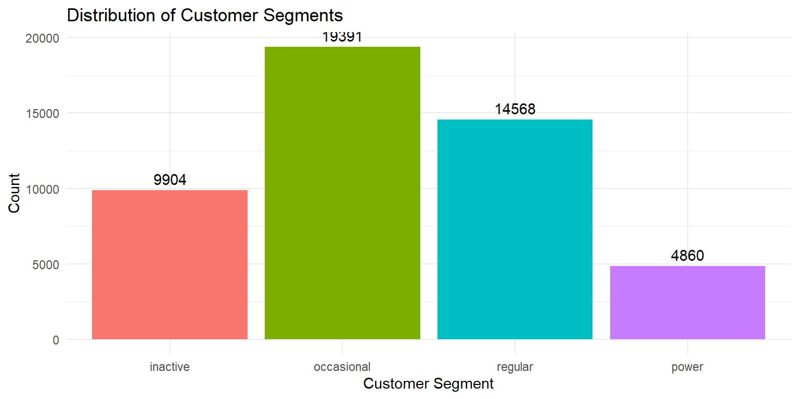
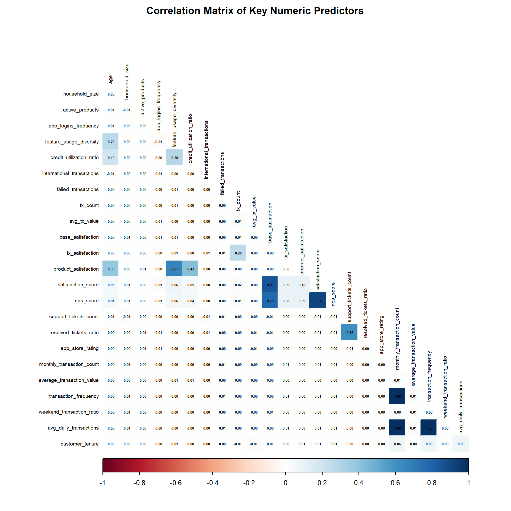
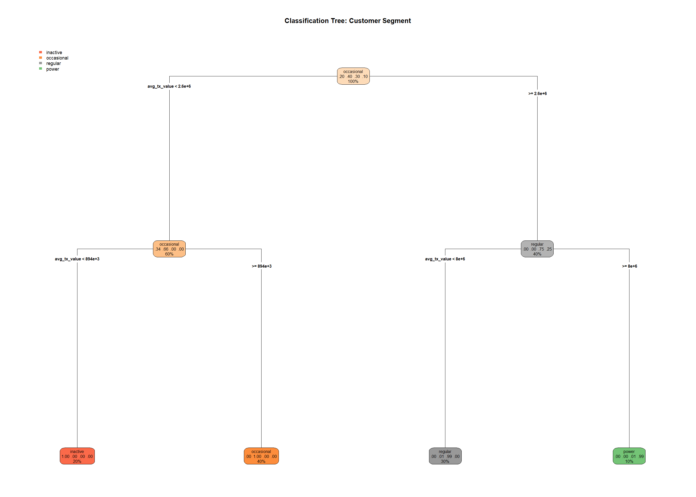
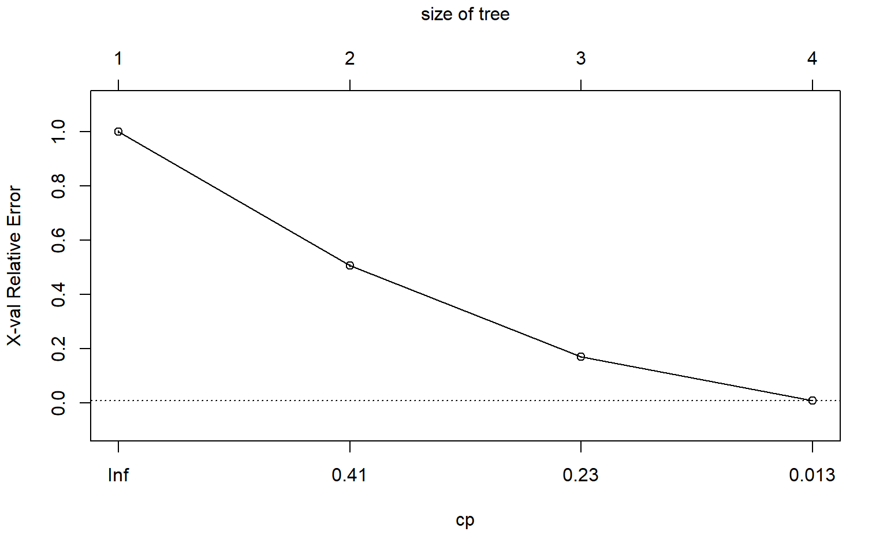
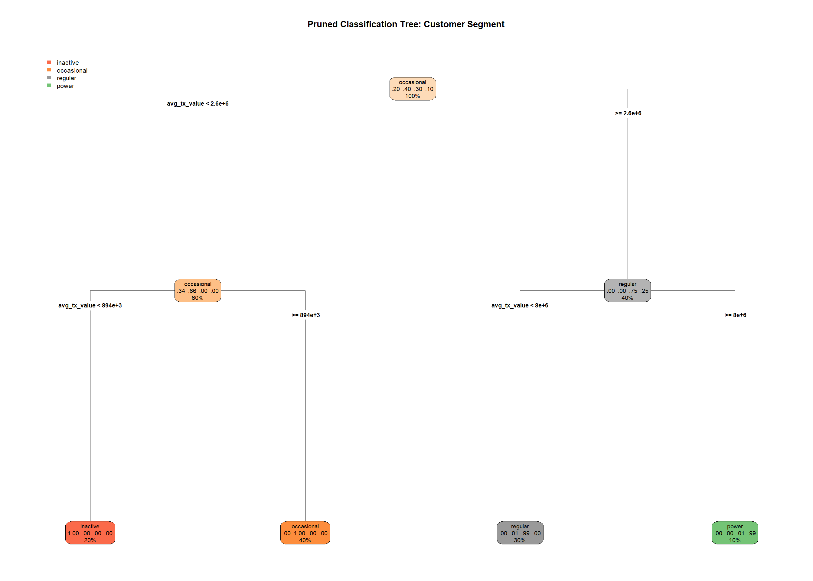
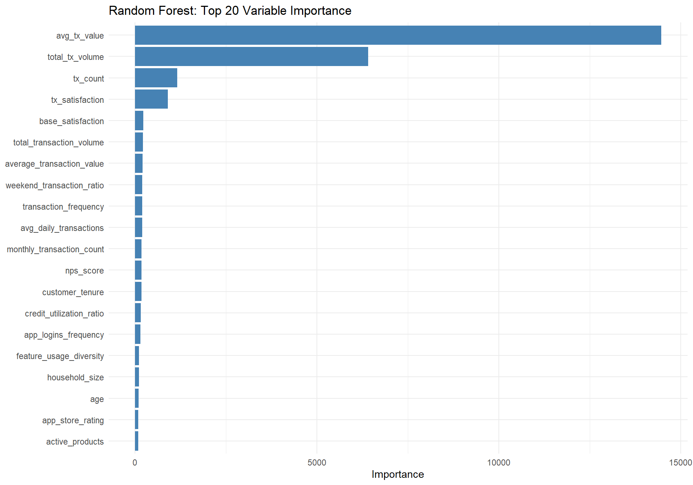
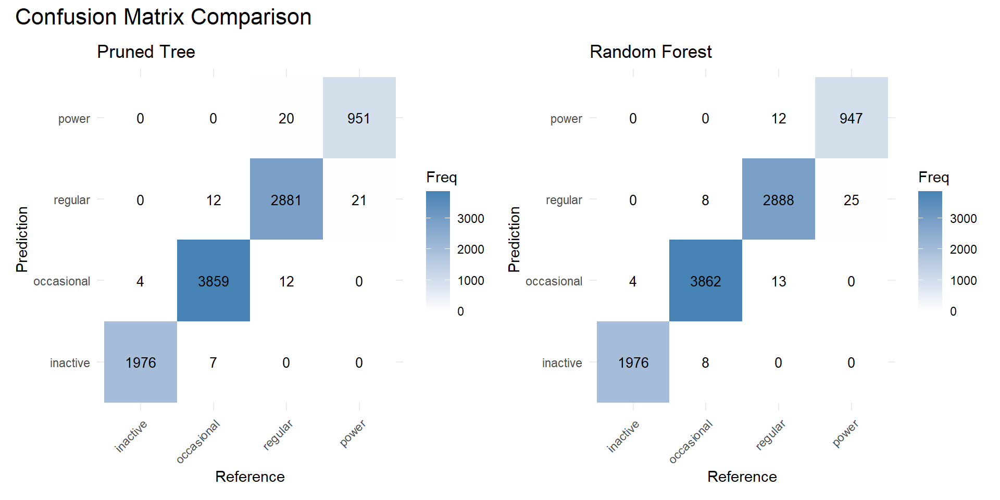
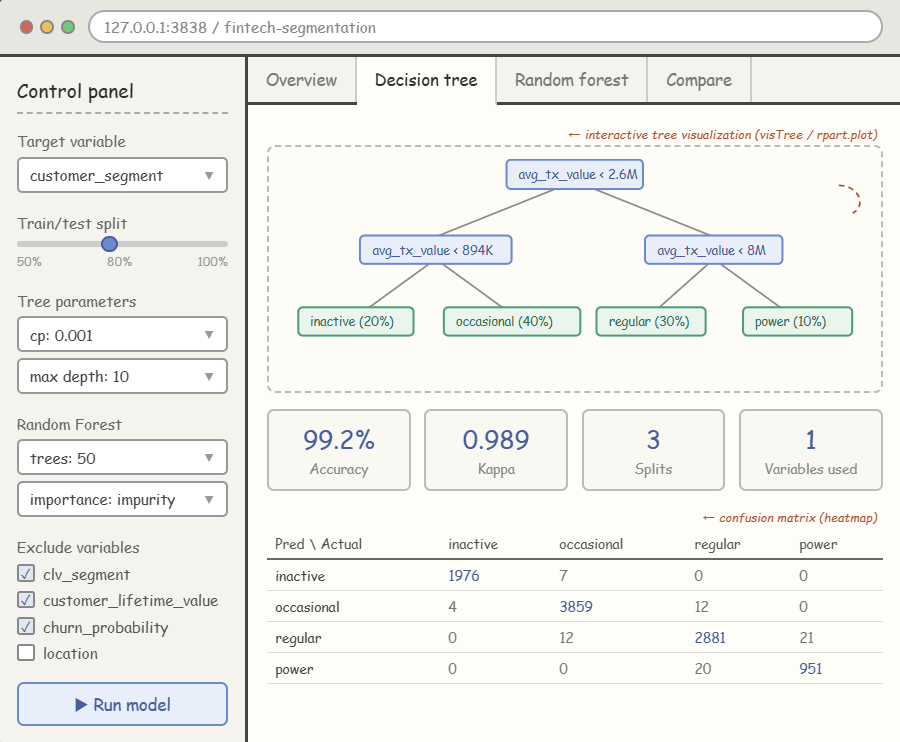

pacman::p_load(tidyverse, rpart, rpart.plot, visNetwork,
ranger, patchwork, corrplot, caret)Decision Tree Analysis: Customer Segment Classification
Colombian Fintech Customer Behavioral Data
1. Load Packages and Data
df <- read_csv("data/customer_data.csv")Rows: 48723 Columns: 54
── Column specification ────────────────────────────────────────────────────────
Delimiter: ","
chr (13): gender, location, income_bracket, occupation, education_level, ma...
dbl (29): customer_id, age, household_size, active_products, app_logins_fre...
lgl (7): savings_account, credit_card, personal_loan, investment_account, ...
date (5): first_tx, last_tx, last_survey_date, last_transaction_date, first...
ℹ Use `spec()` to retrieve the full column specification for this data.
ℹ Specify the column types or set `show_col_types = FALSE` to quiet this message.glimpse(df)Rows: 48,723
Columns: 54
$ customer_id <dbl> 93716481, 49020929, 52690950, 23199751, 619…
$ age <dbl> 44, 44, 45, 45, 44, 45, 44, 44, 45, 44, 44,…
$ gender <chr> "Male", "Male", "Male", "Male", "Female", "…
$ location <chr> "Pereira, Risaralda", "Cali, Valle del Cauc…
$ income_bracket <chr> "Very High", "Medium", "High", "High", "Med…
$ occupation <chr> "Engineer", "Construction Worker", "Constru…
$ education_level <chr> "Master", "Bachelor", "Bachelor", "High Sch…
$ marital_status <chr> "Married", "Married", "Married", "Single", …
$ household_size <dbl> 5, 2, 4, 2, 3, 4, 4, 3, 1, 3, 5, 3, 3, 7, 3…
$ acquisition_channel <chr> "Partnership", "Paid Ad", "Paid Ad", "Refer…
$ customer_segment <chr> "occasional", "regular", "inactive", "inact…
$ savings_account <lgl> TRUE, TRUE, TRUE, TRUE, TRUE, TRUE, TRUE, T…
$ credit_card <lgl> TRUE, FALSE, FALSE, FALSE, TRUE, TRUE, TRUE…
$ personal_loan <lgl> FALSE, FALSE, FALSE, FALSE, FALSE, FALSE, F…
$ investment_account <lgl> FALSE, FALSE, TRUE, TRUE, FALSE, TRUE, FALS…
$ insurance_product <lgl> TRUE, FALSE, TRUE, FALSE, FALSE, FALSE, FAL…
$ active_products <dbl> 1, 5, 3, 2, 1, 1, 1, 4, 2, 3, 1, 5, 3, 1, 1…
$ app_logins_frequency <dbl> 15, 30, 4, 15, 19, 15, 44, 22, 7, 11, 7, 30…
$ feature_usage_diversity <dbl> 3, 0, 4, 4, 1, 4, 6, 1, 1, 6, 3, 1, 2, 1, 3…
$ bill_payment_user <lgl> FALSE, TRUE, TRUE, TRUE, FALSE, TRUE, TRUE,…
$ auto_savings_enabled <lgl> FALSE, FALSE, FALSE, FALSE, FALSE, TRUE, FA…
$ credit_utilization_ratio <dbl> 0.17871029, NA, NA, NA, 0.40360553, 0.07786…
$ international_transactions <dbl> 1, 1, 1, 1, 0, 0, 0, 0, 0, 1, 0, 0, 0, 1, 0…
$ failed_transactions <dbl> 0, 0, 0, 1, 0, 0, 1, 1, 0, 0, 1, 0, 0, 1, 0…
$ tx_count <dbl> 76, 10, 10, 23, 18, 15, 24, 45, 134, 13, 18…
$ avg_tx_value <dbl> 1679872.4, 5445810.0, 640335.0, 660180.4, 1…
$ total_tx_volume <dbl> 127670300, 54458100, 6403350, 15184150, 262…
$ first_tx <date> 2023-01-05, 2023-02-05, 2023-01-31, 2023-0…
$ last_tx <date> 2023-12-25, 2023-12-20, 2023-12-12, 2023-1…
$ base_satisfaction <dbl> 9.213372, 6.073093, 8.198643, 7.529577, 6.6…
$ tx_satisfaction <dbl> 0.380, 0.050, 0.050, 0.115, 0.090, 0.075, 0…
$ product_satisfaction <dbl> 0.6, 0.2, 0.6, 0.4, 0.4, 0.6, 0.4, 0.4, 0.6…
$ satisfaction_score <dbl> 5, 3, 4, 4, 3, 4, 4, 4, 5, 4, 4, 5, 4, 3, 4…
$ nps_score <dbl> -7, -46, -29, -31, -47, -29, -34, -36, -4, …
$ last_survey_date <date> 2023-12-16, 2023-05-05, 2023-11-16, 2023-0…
$ support_tickets_count <dbl> 1, 1, 0, 2, 2, 1, 1, 0, 2, 0, 0, 2, 3, 1, 0…
$ resolved_tickets_ratio <dbl> 0.0000000, 1.0000000, 0.0000000, 0.5000000,…
$ app_store_rating <dbl> 3.5, 4.0, 5.0, 4.5, 4.0, 4.0, 5.0, 4.5, 4.5…
$ feedback_sentiment <chr> "Neutral", "Positive", "Positive", "Positiv…
$ feature_requests <chr> "Budgeting tools", NA, NA, "Cryptocurrency …
$ complaint_topics <chr> NA, NA, NA, NA, "App performance", NA, NA, …
$ clv_segment <chr> "Gold", "Bronze", "Gold", "Bronze", "Gold",…
$ monthly_transaction_count <dbl> 1.428571, 1.571429, 2.500000, 1.555556, 2.1…
$ average_transaction_value <dbl> 6054025.0, 2127413.6, 3575915.0, 1513353.6,…
$ total_transaction_volume <dbl> 60540250, 23401550, 35759150, 21186950, 116…
$ transaction_frequency <dbl> 0.03076923, 0.03293413, 0.05000000, 0.04778…
$ last_transaction_date <date> 2023-12-05, 2023-12-18, 2023-10-27, 2023-1…
$ preferred_transaction_type <chr> "Transfer", "Transfer", "Transfer", "Transf…
$ first_transaction_date <date> 2023-01-05, 2023-02-05, 2023-01-31, 2023-0…
$ weekend_transaction_ratio <dbl> 0.30000000, 0.18181818, 0.30000000, 0.14285…
$ avg_daily_transactions <dbl> 0.03076923, 0.03293413, 0.05000000, 0.04778…
$ customer_tenure <dbl> 11.633333, 11.500000, 8.766667, 10.733333, …
$ churn_probability <dbl> 0.3622688, 0.1817896, 0.3212651, 0.3366287,…
$ customer_lifetime_value <dbl> 312414808, 167022286, 19403711, 35978105, 3…2. Data Preparation
2.1 Variable Selection Rationale
Before building our model, we need to carefully examine all 54 variables and decide which to keep. The following variables are ones I will remove:
- ID and Date: ‘customer_id’ is just a number, and ‘date’ is a raw string; these are meaningless for prediction.
- Free Text: ‘feature_requests’ and ’complaint_topics’have too many missing values and are textual data, useless for decision trees.
- Data Leakage: ‘clv_segment’ and ‘customer_lifetime_value’ are strongly correlated with the target variable ‘customer_segment’, causing the model to access the target variable.
Variables Removed
| Variable(s) | Reason |
|---|---|
customer_id |
Row identifier, no predictive value |
first_tx, last_tx, first_transaction_date, last_transaction_date, last_survey_date |
Raw date strings; temporal information already captured by customer_tenure |
feature_requests |
Free-text field with 33% missing values |
complaint_topics |
Free-text field with 50% missing values |
clv_segment |
Data leakage — strongly correlated with customer_segment (e.g., 74% of power users are Platinum, 64% of inactive are Bronze) |
customer_lifetime_value |
Data leakage — mean CLV differs by 15× between power and inactive segments; likely derived from the same underlying data |
churn_probability |
Near-constant across all segments (mean ≈ 0.343 for every group), contributes no discriminative power |
df_analysis <- df %>%
select(-customer_id,
-first_tx, -last_tx,
-first_transaction_date, -last_transaction_date,
-last_survey_date,
-feature_requests, -complaint_topics,
-clv_segment,
-customer_lifetime_value,
-churn_probability)2.2 Handling Missing Values
Decision trees in R require categorical predictors to be factors. We convert all character and logical columns accordingly. The target variable ‘customer_segment’ is also converted to a factor with a meaningful level order.
colSums(is.na(df_analysis)) %>%
.[. > 0] %>%
sort(decreasing = TRUE)credit_utilization_ratio
18263 ‘credit_utilization_ratio’ has 18,000 missing values. This is because customers without a credit card would not have a utilization ratio. We impute these with 0, representing no credit usage.
df_analysis <- df_analysis %>%
mutate(credit_utilization_ratio = replace_na(credit_utilization_ratio, 0))
sum(is.na(df_analysis))[1] 02.3 Dummy Encoding of Categorical Variables
The rpart algorithm evaluates all possible subsets of factor levels at each split, which becomes computationally expensive when a categorical variable has many levels. To ensure efficient model training, we convert all categorical variables into dummy variables while preserving the target variable customer_segment as a factor.
# Separate target variable
target <- factor(df_analysis$customer_segment,
levels = c("inactive", "occasional", "regular", "power"))
# Create dummy variables for all predictors
predictors <- df_analysis %>% select(-customer_segment)
# Convert logical to numeric (TRUE/FALSE -> 1/0)
predictors <- predictors %>%
mutate(across(where(is.logical), as.integer))
# One-hot encode character variables
dummy_formula <- dummyVars(~ ., data = predictors)
predictors_encoded <- predict(dummy_formula, newdata = predictors) %>%
as.data.frame()
names(predictors_encoded) <- make.names(names(predictors_encoded), unique = TRUE)
# Combine back with target
df_model <- predictors_encoded %>%
mutate(customer_segment = target)
cat("Final dataset:", nrow(df_model), "rows x", ncol(df_model), "columns\n")Final dataset: 48723 rows x 113 columns2.4 Exploratory Overview of Target Variable
ggplot(df_model, aes(x = customer_segment, fill = customer_segment)) +
geom_bar() +
geom_text(stat = "count", aes(label = after_stat(count)), vjust = -0.5) +
labs(title = "Distribution of Customer Segments",
x = "Customer Segment", y = "Count") +
theme_minimal() +
theme(legend.position = "none")
2.5 Correlation Check (Numeric Variables Only)
While decision trees are robust to multicollinearity, a quick correlation heatmap of selected key numeric predictors helps us understand the variable structure.
# Select original numeric variables (not dummies) for readability
key_vars <- df_analysis %>%
select(where(is.numeric)) %>%
select(-starts_with("total_tx"), -starts_with("total_transaction"))
cor_matrix <- cor(key_vars, use = "complete.obs")
corrplot(cor_matrix,
method = "color",
type = "lower",
tl.cex = 0.6,
tl.col = "black",
addCoef.col = "black",
number.cex = 0.4,
diag = FALSE,
title = "Correlation Matrix of Key Numeric Predictors",
mar = c(0, 0, 2, 0))
3. Classification Tree
3.1 Train-Test Split
We use an 80/20 stratified split to preserve the class distribution in both sets.
set.seed(1234)
trainIndex <- createDataPartition(df_model$customer_segment,
p = 0.8,
list = FALSE)
df_train <- df_model[trainIndex, ]
df_test <- df_model[-trainIndex, ]Verify stratification:
cat("Training set class proportions:\n")Training set class proportions:round(prop.table(table(df_train$customer_segment)), 3)
inactive occasional regular power
0.203 0.398 0.299 0.100 cat("\nTest set class proportions:\n")
Test set class proportions:round(prop.table(table(df_test$customer_segment)), 3)
inactive occasional regular power
0.203 0.398 0.299 0.100 3.2 Basic Classification Tree
We use rpart with the "class" method for classification. Initial parameters are set conservatively to allow the tree to grow before pruning.
tree_model <- rpart(customer_segment ~ .,
data = df_train,
method = "class",
control = rpart.control(minsplit = 20,
cp = 0.001,
maxdepth = 10))Visualising the Classification Tree
rpart.plot(tree_model,
type = 4,
extra = 104,
fallen.leaves = TRUE,
roundint = FALSE,
main = "Classification Tree: Customer Segment",
cex = 0.5)
Interactive Tree Visualisation
visTree(tree_model,
edgesFontSize = 14,
nodesFontSize = 16,
width = "100%")3.3 Hyperparameter Tuning via CP Table
The Complexity Parameter table helps us find the optimal tree size by identifying the CP value that minimises cross-validated error.
printcp(tree_model)
Classification tree:
rpart(formula = customer_segment ~ ., data = df_train, method = "class",
control = rpart.control(minsplit = 20, cp = 0.001, maxdepth = 10))
Variables actually used in tree construction:
[1] avg_tx_value
Root node error: 23467/38980 = 0.60203
n= 38980
CP nsplit rel error xerror xstd
1 0.49244 0 1.0000000 1.000000 0.00411811
2 0.33690 1 0.5075638 0.507862 0.00387617
3 0.16150 2 0.1706652 0.171049 0.00255701
4 0.00100 3 0.0091618 0.009801 0.00064435plotcp(tree_model)
Pruning the Tree
bestcp <- tree_model$cptable[which.min(tree_model$cptable[, "xerror"]), "CP"]
cat("Best CP:", bestcp, "\n")Best CP: 0.001 pruned_tree <- prune(tree_model, cp = bestcp)rpart.plot(pruned_tree,
type = 4,
extra = 104,
fallen.leaves = TRUE,
roundint = FALSE,
main = "Pruned Classification Tree: Customer Segment",
cex = 0.6)
3.4 Evaluate on Test Set
pred_tree <- predict(pruned_tree, df_test, type = "class")
cm_tree <- confusionMatrix(pred_tree, df_test$customer_segment)
print(cm_tree)Confusion Matrix and Statistics
Reference
Prediction inactive occasional regular power
inactive 1976 7 0 0
occasional 4 3859 12 0
regular 0 12 2881 21
power 0 0 20 951
Overall Statistics
Accuracy : 0.9922
95% CI : (0.9902, 0.9938)
No Information Rate : 0.398
P-Value [Acc > NIR] : < 2.2e-16
Kappa : 0.9889
Mcnemar's Test P-Value : NA
Statistics by Class:
Class: inactive Class: occasional Class: regular
Sensitivity 0.9980 0.9951 0.9890
Specificity 0.9991 0.9973 0.9952
Pos Pred Value 0.9965 0.9959 0.9887
Neg Pred Value 0.9995 0.9968 0.9953
Prevalence 0.2032 0.3980 0.2990
Detection Rate 0.2028 0.3961 0.2957
Detection Prevalence 0.2035 0.3977 0.2991
Balanced Accuracy 0.9985 0.9962 0.9921
Class: power
Sensitivity 0.97840
Specificity 0.99772
Pos Pred Value 0.97940
Neg Pred Value 0.99761
Prevalence 0.09976
Detection Rate 0.09761
Detection Prevalence 0.09966
Balanced Accuracy 0.988064. Random Forest
4.1 Training
We use the ranger engine directly (rather than through caret::train()) for computational efficiency with our large dataset of ~39,000 training observations.
rf_model <- ranger(customer_segment ~ .,
data = df_train,
num.trees = 50,
importance = "impurity",
seed = 1234)
print(rf_model)Ranger result
Call:
ranger(customer_segment ~ ., data = df_train, num.trees = 50, importance = "impurity", seed = 1234)
Type: Classification
Number of trees: 50
Sample size: 38980
Number of independent variables: 112
Mtry: 10
Target node size: 1
Variable importance mode: impurity
Splitrule: gini
OOB prediction error: 0.73 % 4.2 Evaluate on Test Set
pred_rf <- predict(rf_model, df_test)$predictions
cm_rf <- confusionMatrix(pred_rf, df_test$customer_segment)
print(cm_rf)Confusion Matrix and Statistics
Reference
Prediction inactive occasional regular power
inactive 1976 8 0 0
occasional 4 3862 13 0
regular 0 8 2888 25
power 0 0 12 947
Overall Statistics
Accuracy : 0.9928
95% CI : (0.9909, 0.9944)
No Information Rate : 0.398
P-Value [Acc > NIR] : < 2.2e-16
Kappa : 0.9897
Mcnemar's Test P-Value : NA
Statistics by Class:
Class: inactive Class: occasional Class: regular
Sensitivity 0.9980 0.9959 0.9914
Specificity 0.9990 0.9971 0.9952
Pos Pred Value 0.9960 0.9956 0.9887
Neg Pred Value 0.9995 0.9973 0.9963
Prevalence 0.2032 0.3980 0.2990
Detection Rate 0.2028 0.3964 0.2964
Detection Prevalence 0.2036 0.3981 0.2998
Balanced Accuracy 0.9985 0.9965 0.9933
Class: power
Sensitivity 0.97428
Specificity 0.99863
Pos Pred Value 0.98749
Neg Pred Value 0.99715
Prevalence 0.09976
Detection Rate 0.09720
Detection Prevalence 0.09843
Balanced Accuracy 0.986464.3 Variable Importance (Top 20)
The variable importance plot confirms ‘avg_tx_value’ as the most dominant predictor which importance is 15000, followed by total_tx_volume and tx_count . These top three variables are all directly related to transaction monetary value and volume. Satisfaction metrics tx_satisfaction and base_satisfaction appear in positions 4–5, but with importance values roughly 5–6× lower than the top predictor. Demographic variables , product adoption , and app engagement such as app_logins_frequency, feature_usage_diversity contribute minimally, suggesting they play almost no role in determining customer segment membership.
imp_df <- data.frame(
Variable = names(rf_model$variable.importance),
Importance = rf_model$variable.importance
) %>%
arrange(desc(Importance)) %>%
head(20)
ggplot(imp_df, aes(x = reorder(Variable, Importance), y = Importance)) +
geom_col(fill = "steelblue") +
coord_flip() +
labs(title = "Random Forest: Top 20 Variable Importance",
x = NULL, y = "Importance") +
theme_minimal()
4.4 Model Comparison
comparison <- data.frame(
Model = c("Pruned Classification Tree", "Random Forest"),
Accuracy = c(cm_tree$overall["Accuracy"],
cm_rf$overall["Accuracy"]),
Kappa = c(cm_tree$overall["Kappa"],
cm_rf$overall["Kappa"])
)
knitr::kable(comparison, digits = 4,
caption = "Model Performance Comparison on Test Set")| Model | Accuracy | Kappa |
|---|---|---|
| Pruned Classification Tree | 0.9922 | 0.9889 |
| Random Forest | 0.9928 | 0.9897 |
p1 <- as.data.frame(cm_tree$table) %>%
ggplot(aes(x = Reference, y = Prediction, fill = Freq)) +
geom_tile() +
geom_text(aes(label = Freq), size = 3.5) +
scale_fill_gradient(low = "white", high = "steelblue") +
labs(title = "Pruned Tree") +
theme_minimal() +
theme(axis.text.x = element_text(angle = 45, hjust = 1))
p2 <- as.data.frame(cm_rf$table) %>%
ggplot(aes(x = Reference, y = Prediction, fill = Freq)) +
geom_tile() +
geom_text(aes(label = Freq), size = 3.5) +
scale_fill_gradient(low = "white", high = "steelblue") +
labs(title = "Random Forest") +
theme_minimal() +
theme(axis.text.x = element_text(angle = 45, hjust = 1))
p1 + p2 +
plot_annotation(title = "Confusion Matrix Comparison",
theme = theme(plot.title = element_text(size = 16)))
5. Proposed Shiny Application Design

The proposed Shiny application features a sidebar control panel allowing users to interactively adjust model parameters (complexity parameter, max depth, number of trees) and variable selection. The main panel is organised into four tabs: Overview：for exploratory data analysis Decision Tree： for the classification tree visualisation and evaluation Random Forest： for ensemble model results Compare：for side-by-side model performance comparison.